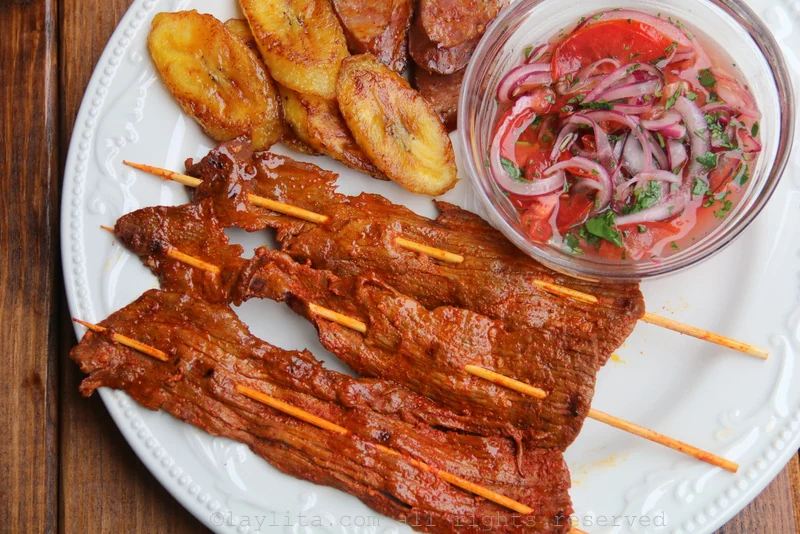
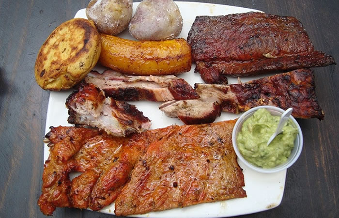
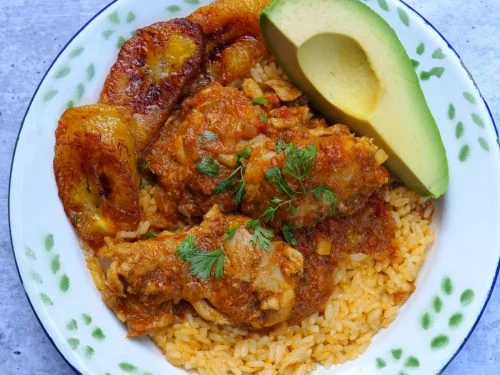
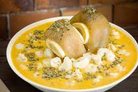

1. Descripción e historia del cantón
Urdaneta es un cantón perteneciente a la provincia de Los Ríos, ubicado en la región Costa del Ecuador. Su cabecera cantonal es Catarama. Es un territorio reconocido por sus actividades agrícolas, sus tradiciones montubias y sus paisajes naturales.
Antiguamente, Catarama era conocida como Puerto de Catarama, porque las balsas que navegaban por el río realizaban paradas en este lugar. Con el paso del tiempo, la población creció gracias a las actividades comerciales y a las haciendas productoras de cacao y café.
El cantón fue creado el 11 de octubre de 1913. Su nombre fue elegido en honor a Luis de Urdaneta, personaje relacionado con la independencia sudamericana.
2. Parroquias del cantón
Parroquia urbana
- Catarama (cabecera cantonal).
Parroquia rural
- Ricaurte.
Algunos recintos y sectores
- Pijullo.
- Potosí.
- Salampe.
- Palma Sola.
- Las Cañitas.
- San Nicolás.
- Roblecito.
- Los Ángeles.
3. Actividades económicas y gastronomía
La economía de Urdaneta se basa principalmente en la agricultura, la ganadería y el comercio. Sus tierras permiten cultivar diferentes productos que son importantes para la alimentación y la economía de sus habitantes.
Principales productos agrícolas
- Cacao.
- Arroz.
- Maíz.
- Banano.
- Café.
- Frutas tropicales.
Gastronomía típica
La comida de Urdaneta conserva las costumbres gastronómicas de la región Costa y la cultura montubia.
- Gallo Pinto.
- Carne en palito.
- Asados tradicionales.
- Seco de gallina.
- Caldo de pata.




4. Lugares turísticos
Río Catarama
Es un elemento natural importante para la historia del cantón. Antiguamente fue una vía de transporte para las balsas y el comercio de productos agrícolas.
Catarama
Es la cabecera cantonal de Urdaneta. En esta ciudad se encuentran espacios representativos de la vida comercial, social y cultural del cantón.
Ricaurte
Es la parroquia rural del cantón. Se caracteriza por sus actividades agrícolas y por conservar las tradiciones de las comunidades rurales.
Pijullo
Es uno de los sectores rurales de Urdaneta, relacionado con las actividades agrícolas y la vida comunitaria.
Fiestas de cantonización
Cada 11 de octubre se conmemora la cantonización de Urdaneta. Se realizan actividades culturales, eventos cívicos y celebraciones populares.
5. Hoteles y hospedaje
Los visitantes pueden encontrar opciones de hospedaje en Catarama y en los sectores cercanos.
Consultar hoteles en Urdaneta6. Alcalde del cantón
Amada Zambrano Rodríguez
7. Población
Según el Censo de Población y Vivienda 2022 del Instituto Nacional de Estadística y Censos (INEC), el cantón Urdaneta registra 33.151 habitantes.
La población se distribuye entre las zonas urbanas y rurales. Una parte importante de sus habitantes se dedica a la agricultura, la ganadería y las actividades comerciales.
8. Ubicación geográfica
El cantón Urdaneta se encuentra en la provincia de Los Ríos. Su cabecera cantonal, Catarama, está ubicada cerca del río Catarama.